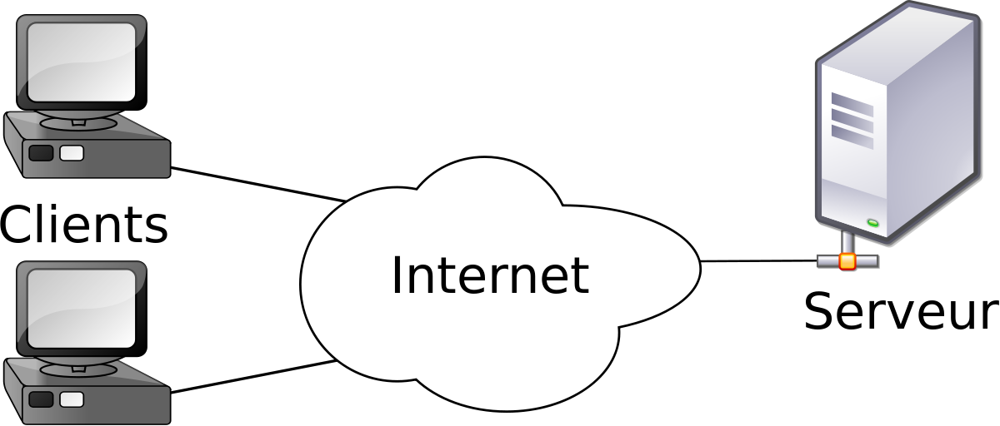

Voici une conversation entre deux amis :
Joe : Bonjour David, peux tu me ramener l'enveloppe rouge qui est dans la salle B101, dans mon bureau dans le troisième tiroir s'il te plait ?
David : Bien-sûr Joe, je vais le chercher ..... Le voilà Joe.
Joe : Merci David.
Joe et David sans le savoir viennent de créer un modèle client/serveur juste la sous vos yeux :
Joe, qui est un sacré casse pied en plus d'un grand fainéant, demande à nouveau à David :
Sur internet, ce modèle client/serveur domine assez largement, même s'il existe des cas où un ordinateur pourra jouer tour à tour le rôle de client et le rôle de serveur (exemple le (peer to peer)) très souvent, des ordinateurs (les clients) passeront leur temps à demander des ressources à d'autres ordinateurs (les serveurs).
N'importe quel type d'ordinateur peut jouer le rôle de serveur, mais dans le monde professionnel les serveurs sont des machines spécialisées conçues pour fonctionner 24h sur 24h de la façon la plus fiable possible. Ils peuvent aussi avoir une grosse capacité de stockage afin de stocker un grand nombre de ressources (vidéos, sons, ...) , utiliser des systèmes de sauvegardes pour éviter les pertes tragiques de données et des moyens de protections très strictes.
Environ 6500 clients se connectent sur Google chaque seconde. Il serait impossible de gérer cela avec un seul serveur. Imaginez un restaurant où 6500 clients commandent leur repas en même temps au même serveur....
Google, Amazon ou encore Facebook possèdent un très grand nombre de serveurs afin de pouvoir satisfaire les demandes des utilisateurs en permanence. Ces entreprises possèdent d'immenses salles contenant chacune des centaines ou des milliers de serveurs selon les besoins de l'entreprise qui les possèdent.
Souvent les serveurs sont spécialisés dans certaines tâches, par exemple, les serveurs qui envoient aux clients des pages au format HTML sont appelés serveur web.
Il y a quelques années, le web était dit « statique » : le concepteur de site web écrivait son code HTML et ce code était simplement envoyé par le serveur web au client. Les personnes qui consultaient le site avaient toutes le droit à la même page, le web était purement "consultatif".
Les choses ont ensuite évolué : les serveurs sont aujourd'hui capables de générer eux-mêmes du code HTML en utilisant des langages de programmation qui s'exécute sur le serveur avant qu'il ne vous envoie les données (le PHP par exemple). Les résultats qui s'afficheront à l'écran dépendront donc des demandes effectuées par l'utilisateur du site : le web est devenu dynamique : Selon l'endroit où vous habitez, votre âge, votre profil [...] la page affichée sera différente.
Différents langages de programmation peuvent être utilisés « côté serveur » afin de permettre au serveur de générer lui-même le code HTML à envoyer. Le plus utilisé encore aujourd'hui se nomme PHP. D'autres langages sont utilisables côté serveur (pour permettre la génération dynamique de code HTML) : Python...
Exercice :Sur une feuille, faire un résumé de ce que vous avez retenu (entre 5 et 10 lignes). En détaillant les points suivants :